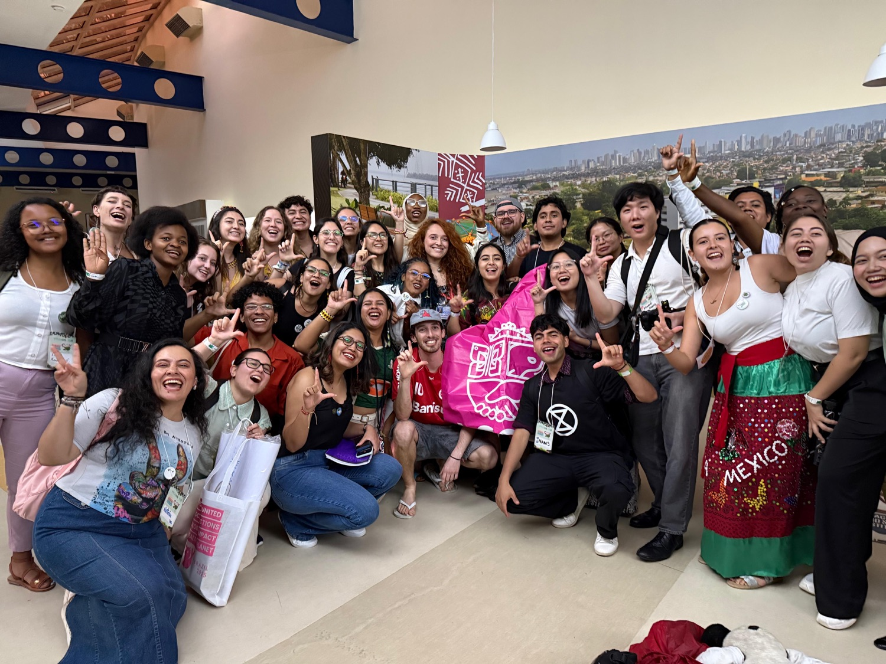
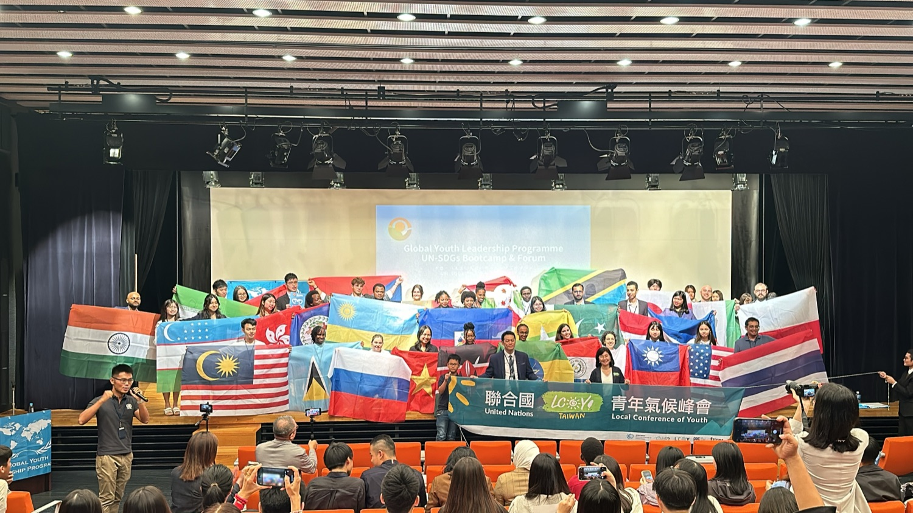

Where students end up
GCOY, youth delegates and international competitions
The ladder is not theory. Students from this framework reach UN youth forums, international invention fairs and global education conferences — broadening their world view.

2024 Seoul International Invention Fair

2025 Hawaii International Conference on Education

2025 ICITY · USA

2024 Conference of Youth · Baku, Azerbaijan

2025 Conference of Youth · Belém, Brazil

2024 LCOY Taiwan · Okinawa

2024 LCOY Taiwan